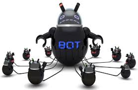

Bots
Descoberta: Por volta dos anos 2000
Malefícios: Bots são programas que transformam computadores infectados em partes de uma rede chamada botnet. Hackers podem controlar essas redes remotamente para lançar ataques DDoS, enviar spam ou espalhar vírus. Um computador "zumbi" operado por bots pode ser usado em crimes virtuais sem o conhecimento do dono.